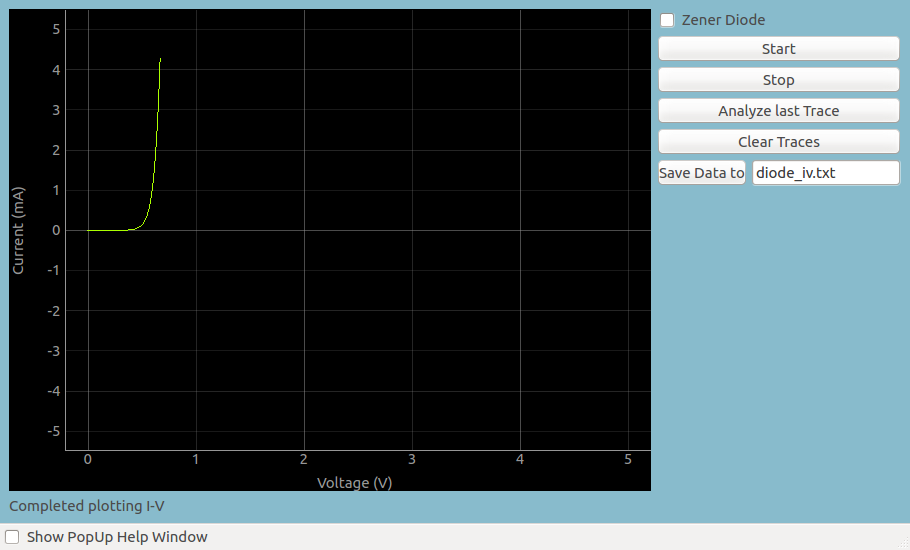

Diode IV Characteristic
The schematic is wired as shown in the diagram below. The voltage across
the diode is measured on A1. The anode of the diode is connected to PV1,
through a 1k resistor. Voltage at PV1 is incremented in steps and at each
point the voltage across the diode is measured. The current is calculated
from i = (PV1-A1)/R. The diode used is 1N4148, silicon diode.

|

|
| Wiring Diagram |
Photograph of the experimental setup. Used OP07 (pin configuration
of uA741) |

|
| Screen shot of Diode IV characteristic |